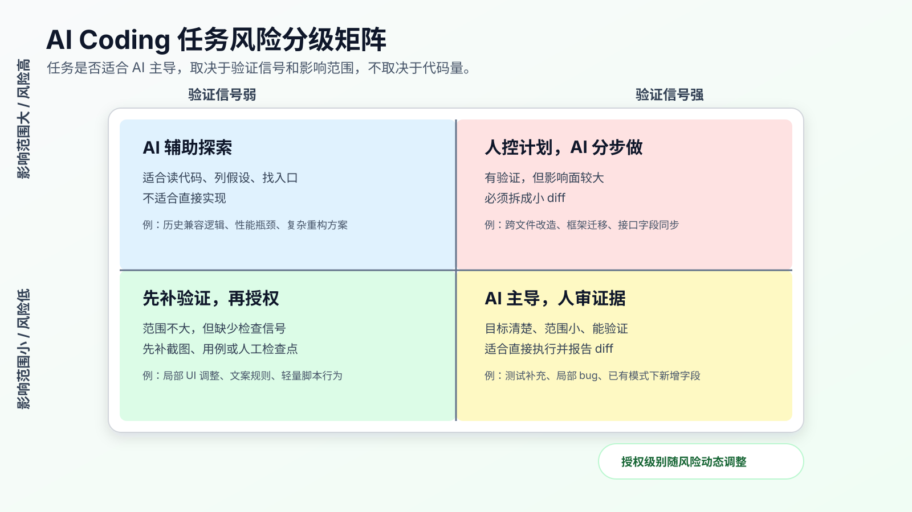
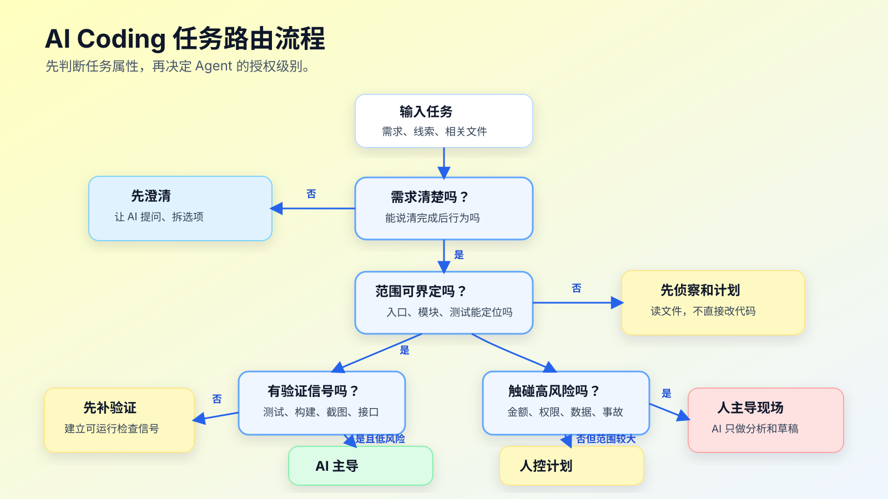

AI 最擅长和最不擅长的开发任务
判断一个任务能不能交给 AI，不要先问“AI 会不会写这段代码”。
先问四个问题：这个任务的目标是否清楚，影响范围是否可控，验证信号是否明确，关键业务判断是否已经有人做过。
这四个问题，比模型名字、工具名字、prompt 技巧都更重要。
AI Coding 最容易被误用的地方，是把所有任务都按“简单/复杂”来分。很多任务代码量不大，但风险很高；很多任务看起来复杂，但只要边界清楚、测试充分，反而适合交给 Agent 执行。
比如：
- 给已有接口补一条参数校验，可能很适合 AI 主导。
- 修改“订单已支付后是否允许回退状态”，代码也许只有两行，但不该让 AI 自己拍板。
- 把一批老 API 从
callback改成async/await，代码量很大，但如果有测试、有规则、有范围，也可以让 AI 分批做。 - 线上鉴权异常正在影响用户登录，这时 AI 可以帮你读日志和列假设，但关键决策必须人先控住。
所以，程序员用 AI Coding，先要建立任务分级能力。

任务不是按“难不难”分，而是按“可控不可控”分
官方文档里其实有一致的方向。
OpenAI Codex 的最佳实践建议在任务里给清楚 goal、context、constraints、done when，复杂、模糊或难描述的任务先让 Codex plan 再实现。Anthropic 的 Claude Code 最佳实践强调给 Agent 一个可运行的检查信号，并把 explore、plan、code 分开。GitHub Copilot cloud agent 的文档也明确说，分配给 agent 的 issue 最好有清晰描述、完整完成条件和相关文件方向；复杂宽泛、敏感关键、需求模糊的任务更适合人自己处理。
这不是三家工具的偶然相似。它们都在提醒同一件事：Agent 更适合处理有边界、有上下文、有反馈的任务。
程序员可以把任务拆成四个维度来看：
| 维度 | 低风险信号 | 高风险信号 |
|---|---|---|
| 目标清晰度 | 一句话能说明改什么、完成后行为是什么 | 需求里有“优化一下”“体验更好”“兼容历史情况” |
| 影响范围 | 单文件、单模块、已有相同模式 | 跨模块、跨仓库、公共接口、数据结构变化 |
| 验证信号 | 有单测、类型检查、截图、接口用例或可复现步骤 | 只能靠肉眼判断，或者依赖线上数据和第三方系统 |
| 业务风险 | 文案、样式、局部工具、非核心路径 | 金额、权限、状态机、数据迁移、隐私、安全、线上事故 |
这四个维度比“前端/后端”“简单/复杂”更有用。
一个前端按钮改色，如果影响设计系统组件，也可能不小。一个后端逻辑修复，如果只改一个已有 guard，并且有失败用例锁住边界，反而可以让 AI 主导实现。
四种任务处理模式
我通常把 AI Coding 任务分成四类。
第一类：AI 主导，人做快速审查。
适合目标明确、影响范围小、验证信号强的任务。例如：
- 文档补充和结构调整。
- 明确的测试补充。
- 已有模式下新增字段。
- 局部 bug，有复现用例。
- UI 小改，有截图对比。
- 简单脚本修复，有输入输出样例。
这类任务可以直接给 Agent 执行，但仍然要看 diff 和命令输出。
第二类：AI 实现，人控制计划。
适合中等复杂度任务。需求已经清楚，但涉及多个文件或少量架构边界。例如：
- 给现有模块加一个新能力。
- 补充接口字段，并同步类型、测试和页面展示。
- 修复一个涉及前后端状态一致性的 bug。
- 小范围重构，但范围已经被锁定。
这类任务不要让 Agent 一上来写代码。先让它读文件、出计划、拆步骤。人确认计划后，再让它一步一步改。
第三类：人主导判断，AI 辅助执行。
适合业务判断重、上下文复杂、验证困难的任务。例如：
- 支付、结算、退款、优惠券叠加规则。
- 权限模型和数据隔离。
- 历史兼容逻辑。
- 性能瓶颈定位。
- 复杂重构方案。
- 数据迁移策略。
这类任务里，AI 的价值很大，但不是拍板。它可以帮你画调用链、读历史提交、整理测试缺口、生成候选方案、补机械改动。关键业务规则和方案取舍要人先定。
第四类：人控制现场，AI 只做辅助分析。
适合高风险、不可逆、时间敏感的任务。例如：
- 线上事故处置。
- 安全漏洞修复。
- 用户隐私和鉴权异常。
- 生产数据修复。
- 大规模依赖升级。
- 删除数据、改迁移、改权限策略。
这里不要把 Agent 放到驾驶位。你可以让它读日志、总结证据、列排查路径、写回滚脚本草稿，但执行和决策必须有人确认。
一个任务路由流程
把上面的分类落到日常工作里，可以用下面这张路由图。

这个流程看起来简单，但能挡掉很多事故。
第一问：需求是否清楚？
如果需求连“完成后什么行为应该改变”都说不清，不要直接实现。先让 AI 采访你，或者让它把需求改写成几个可确认的选项。模糊需求直接进实现，后面很容易变成“它改得很勤快，但不是我要的”。
第二问：影响范围是否能界定？
如果只涉及一个模块，而且你能指出入口、测试和约束，可以继续。如果 Agent 需要自己判断跨模块影响，就先让它做代码侦察和计划，不要授权改代码。
第三问：是否有可运行验证？
没有验证信号的任务，不代表不能做，但不能让 AI 自己宣布完成。至少要补一个命令、截图、接口调用、人工检查点或对比样例。验证信号越弱，人介入越多。
第四问：是否触碰高风险业务？
金额、权限、隐私、状态机、数据迁移、线上事故，不应该因为“代码看起来简单”就放给 AI 主导。这里的风险不在代码行数，而在错误后果。
AI 真正擅长的任务
AI 擅长的不是“简单任务”，而是可描述、可搜索、可验证的任务。
第一类是模式迁移。
比如你已经有三个类似组件，现在要按同样模式加第四个；已经有两个接口用了同样鉴权方式，现在要给第三个接口补上；已有测试文件里有正常路径，现在要补一个边界路径。AI 在这种任务上表现通常不错，因为它可以从已有代码里提取模式。
提示可以这样写：
请参考 `src/features/profile/EditProfileForm.tsx` 的实现方式，
在 `src/features/account/AccountSettingsForm.tsx` 增加同类校验。
要求：
- 只复用现有校验工具，不新增依赖。
- 补充对应测试。
- 跑相关测试命令。
这里的关键是“参考已有模式”，不是让它自由设计。
第二类是测试补充。
AI 很适合根据已有测试风格补测试，尤其是边界条件、异常路径、回归用例。前提是你要告诉它目标行为，而不是只说“提高覆盖率”。
请补一个回归测试：
- 场景：订单已经 paid 时，不允许回退到 pending。
- 期望：返回业务错误，不修改订单状态。
- 参考测试文件：`test/order-status.test.ts`。
先只写失败测试，不改实现。
“先只写失败测试”很重要。它把 AI 从“写一堆能过的测试”拉回到“先锁住真实 bug”。
第三类是局部 bug 修复。
如果 bug 有复现步骤、有错误输出、有相关文件路径，AI 可以很快定位并修复。好的输入应该包含：
现象：
- 用户在 session 过期后重新登录，第一次提交表单失败。
复现：
- 登录后等待 token 过期。
- 刷新页面。
- 提交表单。
已知线索：
- 错误日志：`401 refresh token missing`
- 相关目录：`src/auth/`
- 测试：`test/auth-refresh.test.ts`
要求：
- 先读相关文件并给出计划。
- 不改登录接口协议。
- 用失败测试锁定问题后再改实现。
这种任务很适合 AI，因为它有明确的症状和验证路径。
第四类是机械性同步。
例如类型定义、文档、测试夹具、配置样例需要跟随一个小变更同步。AI 做这种事比人更不容易漏文件，但前提是改动范围可枚举。
字段 `displayName` 已加入 `UserProfile`。
请同步：
- TypeScript 类型
- API fixture
- 对应展示测试
- README 中的字段表
不要修改接口语义。
完成后输出 diff 摘要。
这类任务要避免一个坑：同步不是重构。如果 Agent 借机整理结构，要停。
AI 不擅长独立负责的任务
第一类是目标模糊的任务。
“优化体验”“整理架构”“让代码更优雅”“修一下偶发问题”，这些话对人也不够，对 AI 更不够。Agent 会把模糊目标转成它能执行的局部动作，例如改命名、抽函数、加重试、吞异常。结果可能看起来更整洁，但不一定解决问题。
如果目标模糊，先让 AI 做需求澄清：
先不要改代码。
请把这个需求拆成需要我确认的问题：
- 用户可观察行为是什么？
- 哪些行为不能改变？
- 完成后怎么证明？
- 哪些信息缺失会影响方案？
第二类是领域规则重的任务。
AI 可以读代码，但它不知道你们公司为什么当年留下一个奇怪的分支。很多业务规则不是从代码表面能推出来的。
例如优惠券叠加、风控拦截、支付状态回退、商家结算周期，代码里可能有历史兼容、临时政策、灰度逻辑、人工运营规则。AI 如果只按“更合理”的工程结构来改，可能会删掉业务上必须保留的脏逻辑。
这类任务要先把业务合同写清楚：
## 业务规则
- paid 订单不能回退到 pending。
- refunding 状态可以进入 refunded，但不能进入 canceled。
- 历史订单缺少 `paymentProvider` 时，按 legacy provider 处理。
- 不改变旧接口返回码。
## 人工确认
- 退款状态流转由业务负责人确认。
- 历史订单兼容规则不能由 AI 推断。
第三类是大范围重构。
AI 很容易把重构做成“能跑但难审”的大 diff。大范围重构不是不能用 AI，而是不能让它一口气做完。要把任务拆成可验证的机械步骤：
这次只做第一步：
- 把 `src/payment/legacy.ts` 中的类型定义移动到 `src/payment/types.ts`。
- 不改变运行逻辑。
- 跑现有测试。
- 输出 diff 摘要后停止。
重构任务里，AI 最适合做可机械验证的步骤；抽象边界和迁移顺序要人控制。
第四类是线上事故。
事故现场最怕“看起来合理的改动”。AI 可以帮你整理日志、列假设、写查询、生成回滚检查项，但不要让它直接改生产路径。事故里，优先级是止血、定位、回滚、记录，不是让代码更优雅。
可以这样用：
请只做分析，不要写修复代码。
输入：
- 事故时间线
- 错误日志
- 最近 3 个相关提交
输出：
- 已确认事实
- 可能原因，按证据强弱排序
- 下一步最小验证动作
- 需要人工确认的风险
这种用法能提高排障效率，但不把控制权交出去。
用一张任务卡决定授权级别
给 Agent 开始任务前，可以先写一张很短的任务卡。
# Task Risk Card
## Objective
修复用户 session 过期后第一次提交表单失败的问题。
## Scope
- 可能相关：`src/auth/`、`test/auth-refresh.test.ts`
- 不允许修改：登录接口协议、token 存储格式
## Risk
- 涉及登录状态，但不涉及权限模型变更。
- 不允许吞掉 401 错误。
## Evidence
- 复现日志：`401 refresh token missing`
- 预期验证：`npm test -- auth-refresh`
## Agent Mode
- 先读文件和出计划。
- 人确认计划后再改代码。
- 如果需要扩大范围，先停止。
配套代码仓库 DavidDingXu/learn-ai-coding 的工具 module 里有一个命令可以生成任务上下文包。它不会替你做风险判断，但能把任务信息固定下来：
cd learn-ai-coding/ai-coding-workflow-kit
node src/cli.js task-context \
--title "修复 session 过期后首次提交失败" \
--files "src/auth/,test/auth-refresh.test.ts"
生成出来的上下文包，可以再手动补上 scope、risk、evidence 和 Agent mode。这里不要追求模板漂亮。真正有用的是把“能改什么、不能改什么、怎么证明”写清楚。
五个真实工作里的判断例子
例子一：补一个空状态页面。
需求是“列表为空时显示空状态文案和按钮”，已有同类页面，设计稿明确，有前端测试或截图验证。这个任务可以 AI 主导。你要给它参考组件、目标文件和截图验证要求。
参考 `src/pages/order/EmptyState.tsx` 的模式，
给 `src/pages/invoice/ListPage.tsx` 增加空状态。
要求：
- 不改列表查询逻辑。
- 不新增组件库依赖。
- 跑相关前端测试，必要时提供截图对比。
例子二：修一个接口字段映射错误。
后端返回 display_name，前端类型写成 displayName，页面显示为空。相关文件明确，有 fixture 和测试。这个任务可以 AI 主导，或者 AI 实现、人快速审查。重点是别让它改接口协议。
修复字段映射，不改变后端接口协议。
请先定位 mapping 层和测试，再给最小 diff。
例子三：订单状态偶发回退。
这类任务代码可能很少，但属于状态机和业务规则。不要让 AI 自己判断。先让它整理状态流转、历史测试、日志证据，再由人确认规则。
先不要改代码。
请整理订单状态流转：
- 当前代码允许哪些状态迁移？
- 哪些测试覆盖了 paid/refunding/refunded？
- 日志里回退发生在哪个入口？
- 你认为需要业务确认的问题有哪些？
例子四：把一个模块迁移到新框架。
这是大范围任务。AI 可以参与，但必须拆成阶段。先迁移测试夹具，再迁移只读路径，再迁移写路径，最后清理旧代码。每一步都要有验证命令和回滚边界。
这类任务如果直接说“帮我迁移”，很容易得到一个难审的大 diff。
例子五：线上登录大面积失败。
这里 AI 只能辅助。让它读日志、比较最近提交、列假设、写临时查询都可以。但是否回滚、是否开关降级、是否改鉴权逻辑，必须由人控制。
请基于下面日志只做排障分析，不改代码。
按证据强弱列出假设，并给每个假设的最小验证命令。
这五个例子背后的判断很一致：AI 的授权级别跟代码量无关，跟风险、上下文和验证有关。
一个简单评分法
如果任务很多，可以用 8 分法快速分级。每个维度 0-2 分：
| 维度 | 0 分 | 1 分 | 2 分 |
|---|---|---|---|
| 目标 | 模糊 | 大致清楚 | 行为明确 |
| 范围 | 跨系统 | 多文件但可界定 | 单模块或同类模式 |
| 验证 | 无法本地验证 | 部分可验证 | 有明确命令或截图 |
| 风险 | 关键业务/安全/数据 | 普通业务逻辑 | 文档、测试、局部展示 |
得分不是越高越好，而是用来决定授权：
| 分数 | 建议模式 |
|---|---|
| 7-8 | AI 主导，人审 diff 和证据 |
| 5-6 | AI 实现，人先确认计划 |
| 3-4 | 人主导方案，AI 做侦察和局部执行 |
| 0-2 | 暂不授权实现，先澄清需求或人工处理 |
这个评分法不需要严格。它的价值是让你在任务开始前停 30 秒，避免把高风险任务当成普通代码生成。
任务分级后的提示写法
不同授权级别，对 Agent 的提示也不一样。
AI 主导型：
请直接完成这个小改动：
- 目标：补充 invoice 列表空状态。
- 参考：`src/pages/order/EmptyState.tsx`
- 约束：不改查询逻辑，不新增依赖。
- 完成判断：相关测试通过，并输出 diff 摘要。
AI 实现、人控计划型：
先不要改代码。
请读取相关文件并给出最小实现计划：
- 预计改哪些文件。
- 每个文件为什么要改。
- 需要跑哪些验证命令。
- 哪些风险需要我确认。
人主导、AI 辅助型：
请只做分析和方案候选，不要编辑文件。
输出：
- 已确认事实。
- 缺失上下文。
- 方案 A/B 的影响范围。
- 每个方案的验证方式和风险。
高风险辅助型：
请只基于提供的日志和提交记录做排障分析。
不要给出生产执行命令。
不要修改代码。
按证据强弱排序假设，并列出需要人工确认的点。
把提示写成这样，Agent 就不容易越权。不是因为它“更听话”，而是因为你明确了它当前的角色。
改完怎么确认不是误用 AI
任务完成后，至少看四个结果。
第一，看 diff 范围。
git diff --stat
git diff
如果任务是局部 bug，但 diff 涉及公共基础库、锁文件、多个无关模块，要回到计划重新判断。
第二，看验证命令。
npm test -- auth-refresh
npm run lint
命令要和任务风险匹配。文档改动不一定要跑全量测试，状态机改动只跑格式化肯定不够。
第三，看失败分类。
如果测试失败，先确认是改前已有、环境问题、本次引入，还是需求冲突。不要让 Agent 在没分类前继续改。
第四，看剩余风险。
完成报告里应该有“未覆盖什么”。比如：
未覆盖：
- 没有连接真实支付网关。
- 没有跑浏览器兼容性测试。
- 没有验证历史订单数据。
这几行不是为了承认失败，而是让人知道下一步该看哪里。
常见误区
误区一：AI 适合做简单活，不适合做难活。
这个说法太粗。AI 适合做边界清楚、反馈明确的活。难任务如果能拆成小步，也可以让 AI 做很多；小任务如果涉及核心业务，也不能随便放手。
误区二：测试多就可以放心交给 AI。
测试多只是降低风险，不会自动消除风险。你还要看测试覆盖的是不是本次改动路径，Agent 有没有为了通过测试修改测试本身，是否存在未覆盖的外部系统。
误区三：让 AI 自己判断风险就行。
AI 可以帮你列风险，但不能替你承担责任。业务优先级、线上影响、数据后果、用户承诺，这些判断必须由人来定。
误区四：复杂任务只要 prompt 写得长就能解决。
长 prompt 可能只是把噪音变多。复杂任务需要的是规格、计划、小 diff 和验证，不是把所有背景塞进一段话。
误区五：AI 不适合重构。
AI 可以做重构，但重构必须被拆成机械步骤。先移动类型、再替换调用、再删除旧路径，每一步都能验证。让 AI 一次性“重构得更优雅”，风险很高。
可以先改的一件事
下次你准备把任务交给 AI 前，先写四行：
目标：
范围：
验证：
风险：
如果这四行写不出来，就不要直接实现。先让 AI 帮你澄清。
如果这四行写得很清楚，就继续判断授权级别：AI 主导、AI 实现人控计划、人主导 AI 辅助，还是只让 AI 做分析。
AI Coding 的效率，不来自把更多任务扔给 AI，而来自把合适的任务以合适的授权级别交出去。
接下来进入工具工作台。工具很多，先解决一个问题：在不同任务分级下，应该用 App、CLI、IDE、补全、浏览器和 Git 形成怎样的工作面。
常见问题
任务评分一定要写成文档吗？
不用。
低风险任务可以在脑子里快速过一遍。只要涉及跨模块、状态、权限、金额、数据迁移、线上问题，就建议写成短任务卡。任务卡不需要漂亮，能说明目标、范围、验证和授权级别就够。
AI 判断任务风险靠谱吗？
可以让 AI 辅助列风险，但不能让它最终拍板。
AI 能根据代码、测试和文档发现技术风险，却不一定知道业务承诺、上线窗口、历史兼容、用户影响和组织决策。风险判断可以让它先列证据，再由人确认。
小任务是不是都可以交给 AI 主导？
不一定。
任务小不等于风险低。两行金额计算、一次权限判断、一个状态迁移条件，都可能影响生产。判断授权级别时，看错误后果和验证信号，不看代码行数。
没有测试的任务是不是不能用 AI？
可以用，但要降低授权级别。
没有测试时，可以让 AI 先整理复现步骤、生成手工验证清单、写最小测试候选、查调用链。等验证路径建立起来，再让它实现。不能让它在没有证据的情况下自己宣布完成。
重构类任务怎么用 AI 才合适？
先把重构拆成机械步骤。
例如先移动类型，再替换引用，再删除旧入口，每一步都跑测试。不要让 AI 一次性“整理架构”。重构最怕行为改动混进结构调整里，拆小步是为了让 reviewer 能看懂每一轮变化。
可复查资料
- OpenAI Codex 最佳实践：https://developers.openai.com/codex/learn/best-practices
- Anthropic Claude Code 最佳实践：https://www.anthropic.com/engineering/claude-code-best-practices
- GitHub Copilot cloud agent 任务最佳实践：https://docs.github.com/en/copilot/tutorials/cloud-agent/get-the-best-results